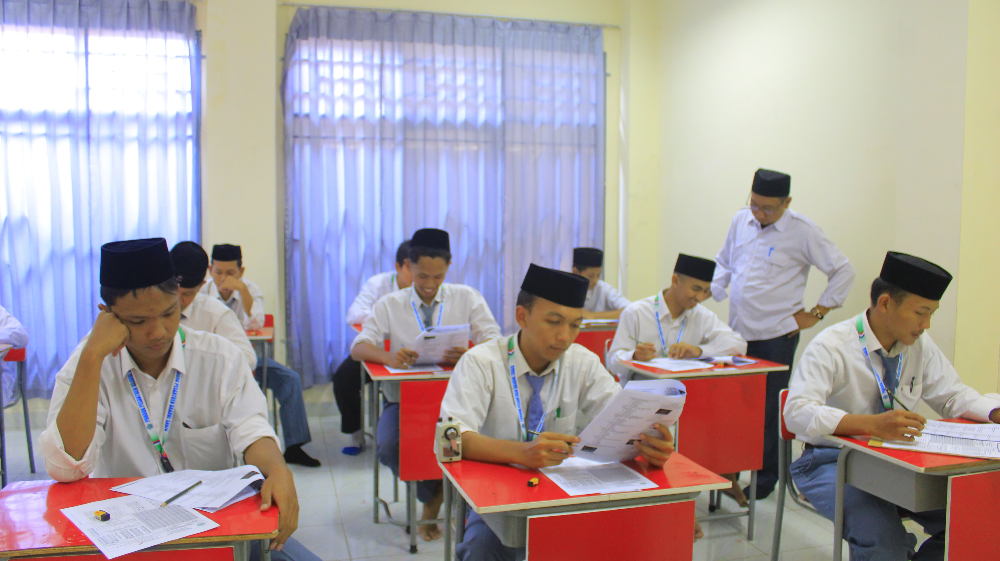
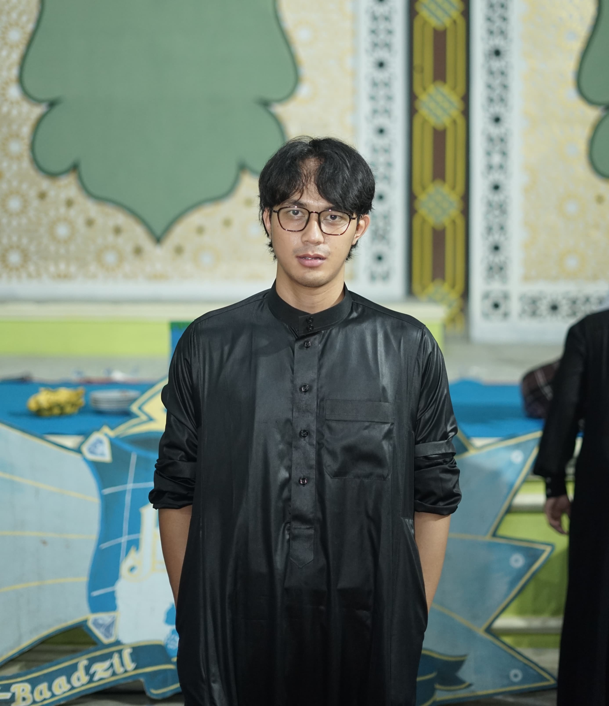
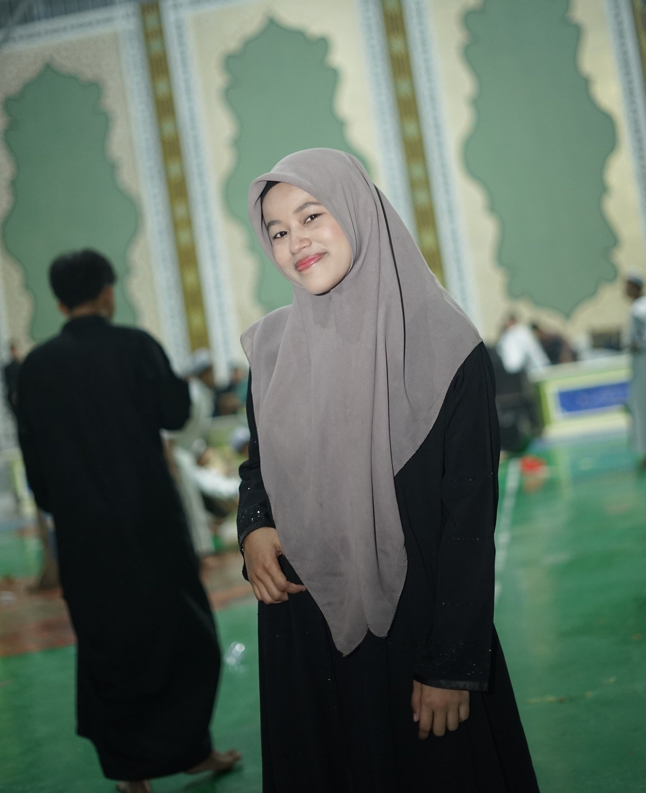

Sekolah Formal
MTs dan SMK Berbasis Pesantren
Pendidikan Formal
Pondok Pesantren Daarul Shafa menyelenggarakan pendidikan formal setingkat MTs dan SMK dengan kurikulum terpadu antara pendidikan nasional dan pesantren.
Jenjang Pendidikan:
MTs (Madrasah Tsanawiyah)
- Kelas 7-9
- Kurikulum Kemenag plus pesantren
- Program tahfidz pilihan
SMK (Teknik Komputer)
- Kelas 10-12
- Jurusan Teknik Komputer dan Jaringan
- Sertifikasi kompetensi
Fasilitas:
Lab Komputer
Perpustakaan
Lab IPA
Internet
Kantin
Masjid
Jadwal Sehari-hari:
| Waktu | Aktivitas |
|---|---|
| 05.00-06.30 | Sholat Subuh & Tahfidz |
| 07.00-12.30 | Sekolah Formal |
| 13.30-15.00 | Pelajaran Pesantren |
| 15.30-17.00 | Ekstrakurikuler |

Persyaratan Pendaftaran:
- Fotokopi rapor
- Akta kelahiran
- Foto 3x4
- Surat keterangan sehat
Profil Alumni

M. Rizki
Lulusan SMK 2021, sekarang bekerja di perusahaan IT ternama

Aisyah Nur
Lulusan MTs 2020, melanjutkan ke Pesantren Tinggi